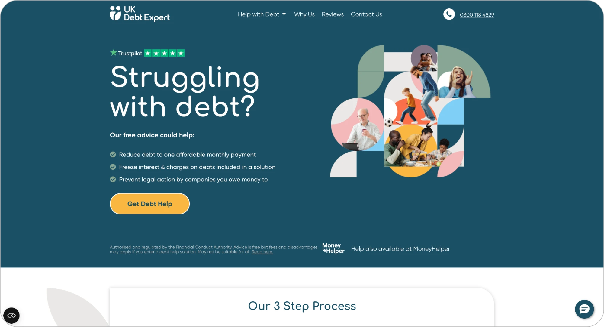
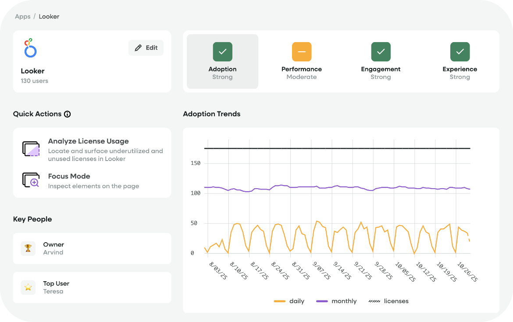
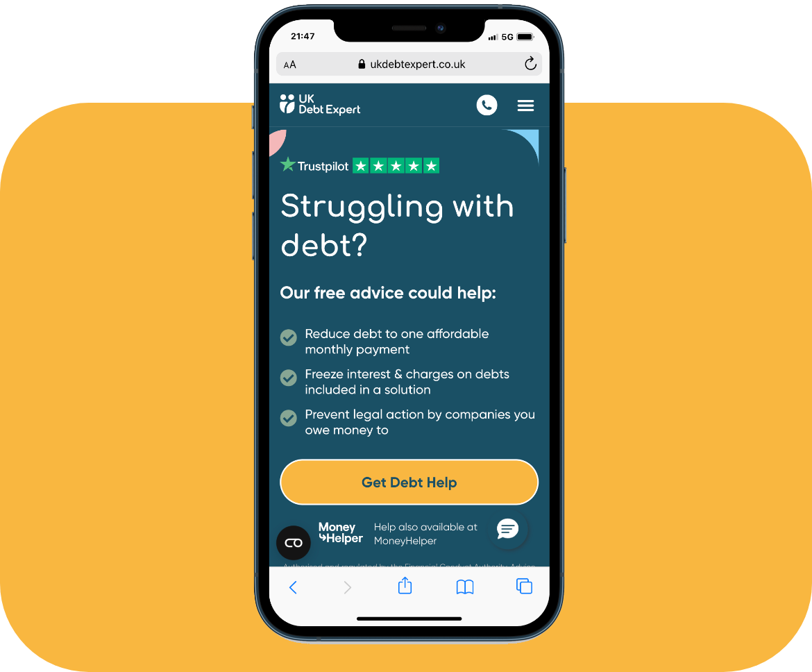

UK Debt Expert
Improving Lead Conversion
A debt-help acquisition funnel experienced its biggest user drop-off when people were asked to provide personal contact information. User research also identified two broad needs: users urgently seeking help and users who wanted more time to research their financial options.
The Plan
To understand the causes of abandonment/drop off and improve conversion by creating experiences better suited to different levels of urgency and intent.

Research & Analysis
For this I used FullStory to analyse drop-offs, rage clicks, scroll depth, CTA engagement and wider interaction behaviour, alongside A/B testing of language and messaging. We strengthened trust signals and developed two approaches: SEO-focused long-form content for research-led users and a Fast Track journey for higher-intent users.
Fast Track would allow users to upload bank statements and provide additional details compared to the regular funnel. In addition, the introduction of the ability to Save progress functionality was implemented to address abandonment issues during this stage.

Result
Fast Track generated a significant uplift and higher-quality enquiries from users with stronger intent. The long-form SEO strategy also delivered sustained month-on-month traffic growth. Together, the work created a more targeted funnel designed around users’ different levels of urgency, confidence and information needs.